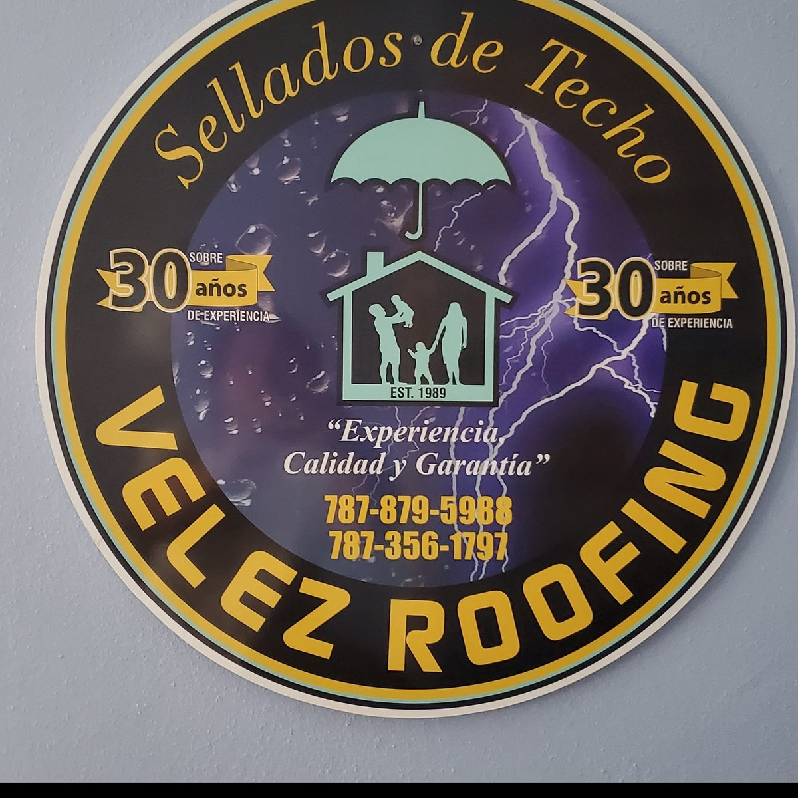
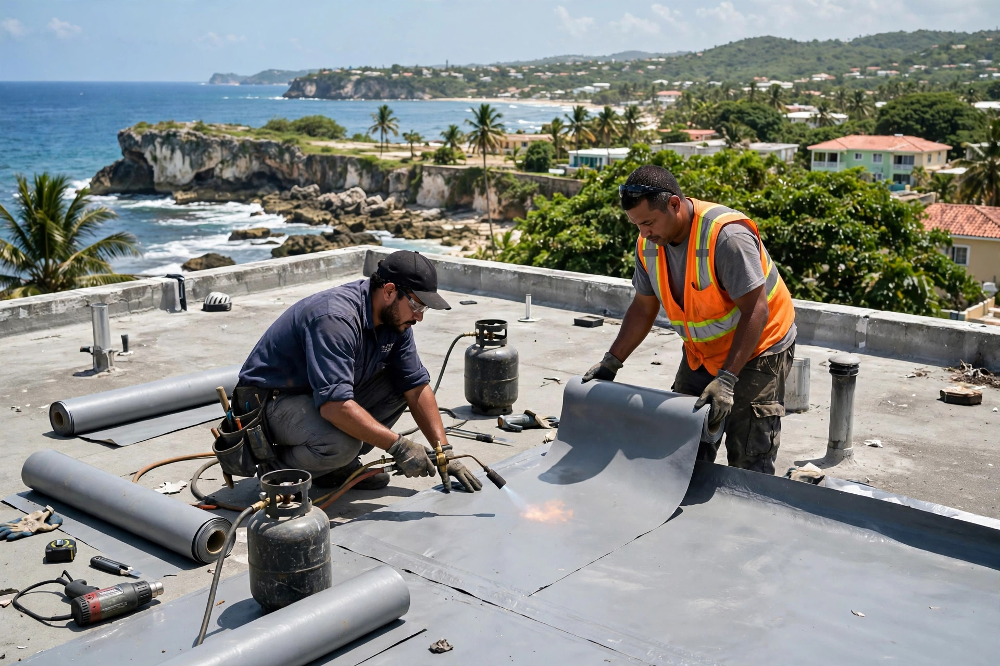
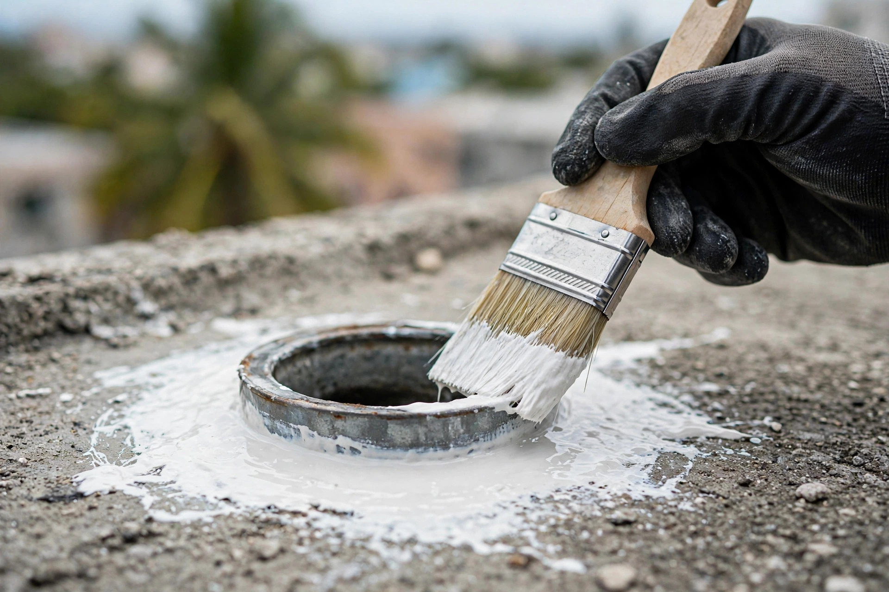
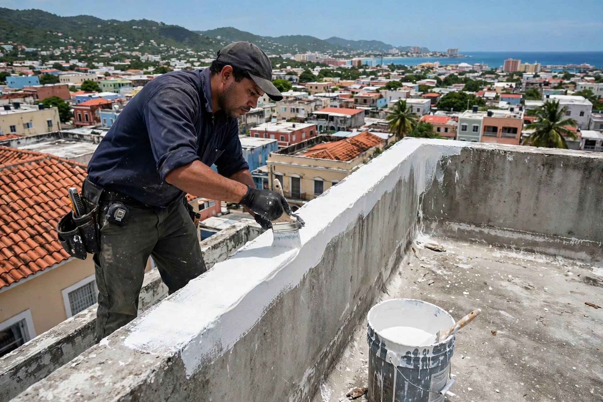
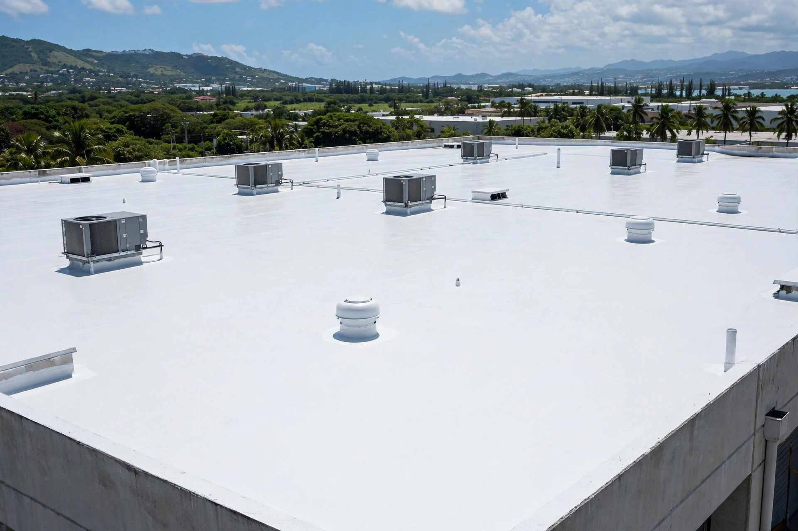
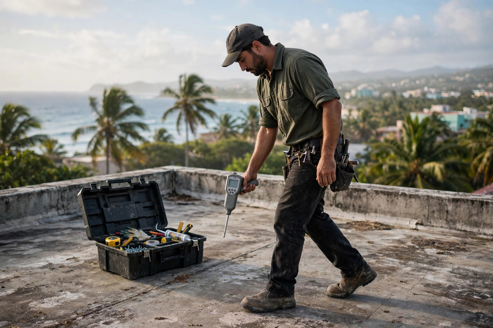

Vélez Roofing General Contractors: sellado y conservación de techos residencial y comercial. Frente al mar, el techo se prueba de verdad — el nuestro pasa la prueba. Estimados gratis.
Membrana, sellado de detalles y conservación: trabajo de contratista general.





No solo sellamos: conservamos tu techo para que dure años frente al clima del norte.
Sistemas de sellado para casas: del pretil al drenaje, todo cubierto.
Techos de negocios y almacenes con sistemas de alta cobertura.
Inspección, reparación de puntos débiles y mantenimiento que alarga la vida del techo.
Cotización sin costo en Arecibo y el norte. Fotos por WhatsApp bienvenidas.
Como General Contractors, vemos el techo completo: estructura, drenaje, penetraciones y sellado. Nada se deja a la improvisación.
No. Los estimados son gratis en Arecibo y pueblos cercanos del norte.
Inspección del techo, reparación de grietas y puntos débiles, limpieza y aplicación del sistema de sellado para extender la vida útil del techo.
Sí. Trabajamos sellado residencial y comercial con equipos y sistemas para cada escala.
Por WhatsApp al 787-356-1797 o llamando al mismo número. Envíanos fotos del techo y te respondemos.
En Arecibo, Puerto Rico. Servimos Arecibo y el norte de la isla.
Esta página la creó ManuPro. Escríbenos hoy mismo y cotiza la website profesional de tu negocio.
Cotizar por WhatsApp